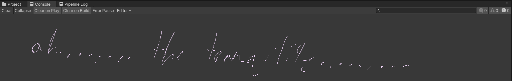

HELLO and welcome to the ,,,,,,,.,.
starstorm 2 unoffical project setup guide !!!!!!
now yuo may be wondering:
"hey icebro, isnt there already a guide on the starstorm 2 github page?? "
byeah
what u need !!
how 2 use !!
first install git if you havent already, then copy the repo into your git client of choice ! (if you have an sdd available, use it, itll make project load times much faster)

once thats done, in unity select the SS2-Project folder and let it import !! (this may take a while, be patience !!)

youll also run into this message, just click understood as this will go away once we import ror2

now you should have the project in unity, and theres gonna be a ton of errors because you havent imported the game silly !!!
there should also be a thunderkit window open, in there go to the import configuraton and disable legacy api (this one will cause issues) and ror2 editor kit (this one will be installed even if turned off)
now go to the thunderkit settings tab, select your game directory (this can be found by right clicking the game on steam, hovering over properties and selecting browse local files) and import it.


you will also need to update r2api.AdressableAssets, to do this go to tools -> thunderkit -> packages and search r2api. now in thunderstore plugins, go to r2api.AdressableAssets and uninstall it, then reopen the project. go back to packages and install r2api.AdressableAssets making sure the version is 1.0.3


with all of that done, reimport ror2 one last time (some stuff isnt set the first time)

once it is done importing, go to edit -> project settings -> player and under Scripting Define Symbols, put
TK_ADDRESSABLE;UNITY_POST_PROCESSING_STACK_V2;RISKOFRAIN2;RISKOFTHUNDER_R2API_CORE;RISKOFTHUNDER_R2API_CONTENTMANAGEMENT
and reopen the project (this will make ror2 editor kit actually work (ty ly earthzebra for giving me this info from nebby))
!!! MAKE SURE TO SELECT ANOTHER TEXT BAR OR SOMETHING ELSE SO IT SAVES !!!

and now everything should be good and war should be over and you should have 0 errors when you click clear in the console tab !!!!!
